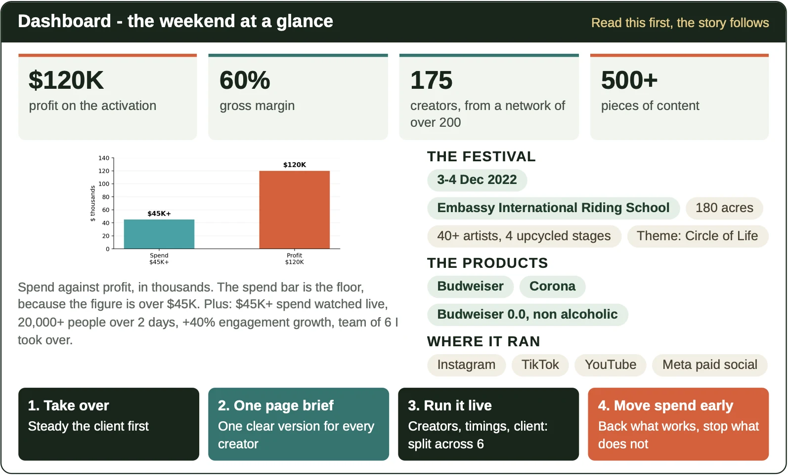

Barcode Entertainment · Growth Marketing
AB InBev x Echoes of Earth Festival
Led a 6-person team to bring a 2-day festival activation to life (175 creators activated from a 200+ network, 500+ content pieces), turning $45K+ in spend into $120,000 in profit at a 60% margin and 40% engagement growth.
-
The question
“With a fixed budget and a live deadline, was the spend actually working, and where?”
-
What was in the way
A 2-day live festival activation on a fixed budget, where the spend had to prove itself while the campaign was still running.
-
What I did
- Ran paid social and creator campaigns on Meta, TikTok, Instagram and YouTube
- Coordinated 175 creators producing 500+ content pieces
- Tracked a $45K+ budget and moved spend to what converted
- Led a 6-person cross-functional team
-
What changed
- $120Kprofit at a 60% margin on $45K+ spend
- +40%engagement growth
- 175creators activated from a 200+ network
- 500+content pieces delivered

Open the 2-page case study (PDF)
Read the full write-up
Problem
AB InBev needed a creator-driven activation for Echoes of Earth, a 2-day live music festival, delivered at scale and on a fixed budget. The challenge wasn't just producing content; it was proving the spend worked, coordinating 175 creators activated from a 200+ creator network across a live deadline, and keeping margin healthy while the campaign ran in real time.
Process
- Ran paid social and creator campaigns across Meta, TikTok, Instagram, and YouTube, adapting creative to local cultural preferences while holding brand consistency.
- Coordinated 175 creators producing 500+ content pieces, managing logistics, timelines, and stakeholder communications across a live 2-day event.
- Tracked budget, milestones, and dependencies against a $45K+ spend, optimizing allocation toward what was actually converting.
- Led a 6-person cross-functional team to timely delivery, building audience storytelling into decks and content.
Outcome
- $120K profit at a 60% margin on $45K+ spend
- +40% engagement growth
- 175 creators activated from a 200+ network
- 500+ content pieces delivered
What I learned
At this scale, margin is a design decision, not an afterthought. Watching performance during the event, not just after it, let us shift spend toward what was landing and protect the margin while the campaign was still live.